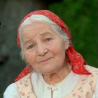
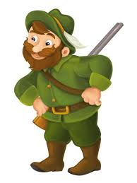
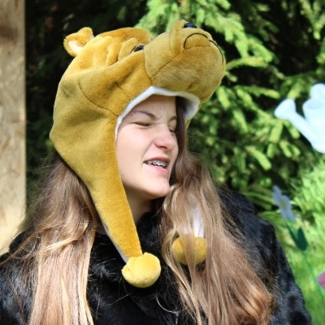

ČERVENÁ KARKULKA
Úvodní strana
Příběh
Postavy
Co měla v košíku
Místa kterými šla
POSTAVY
V pohádce se objevuje několik postav zde jsou uvedeny:
Jméno
Odkud se znají
Jsou přátelé
Dobové foto
Babička
Je to její babička
ANO

Myslivec
Zachránil jí před vlkem
ANO

Vlk
Z lesa, snědl jí
NE
